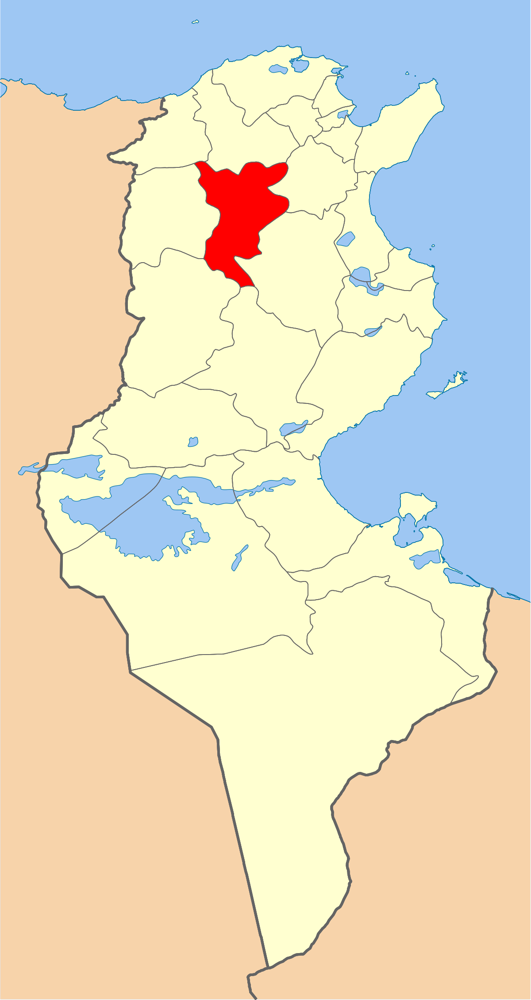
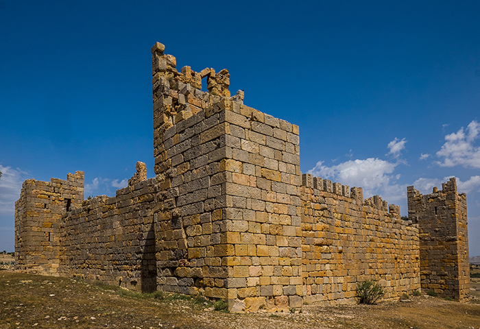
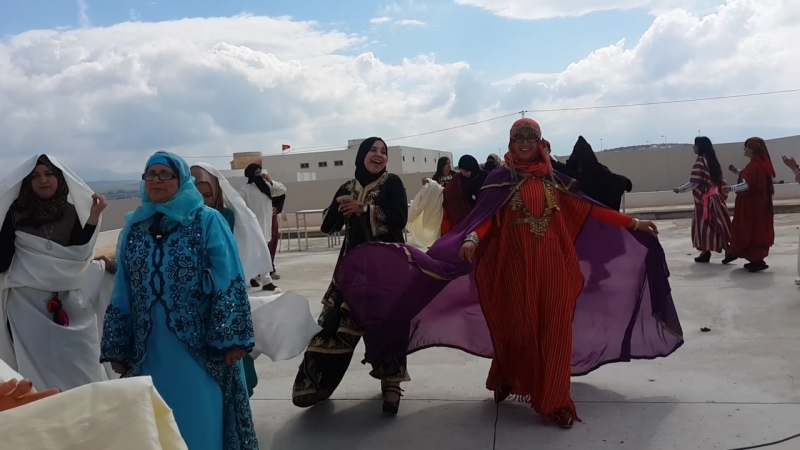
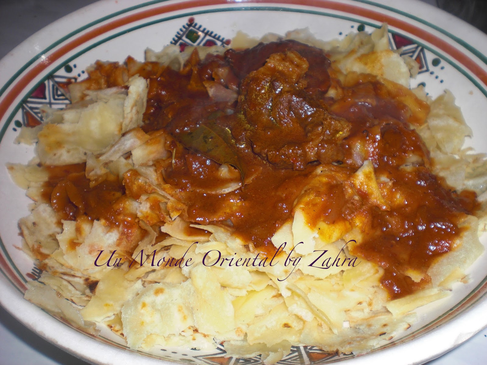
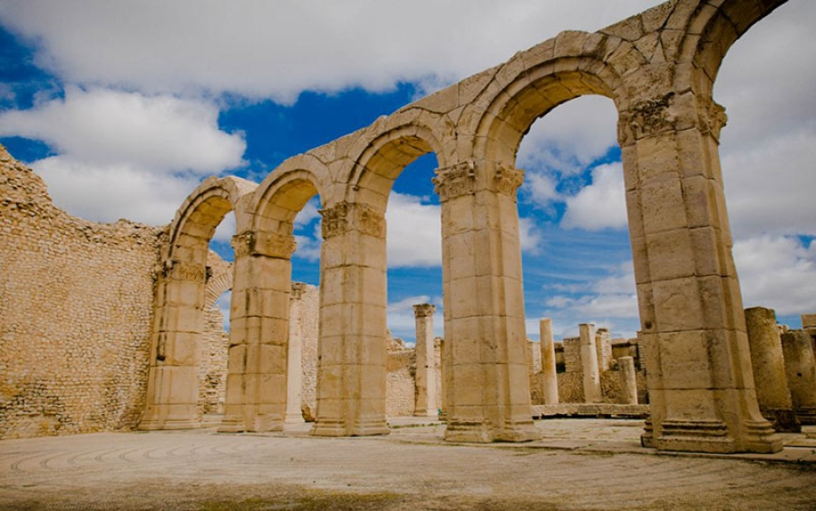
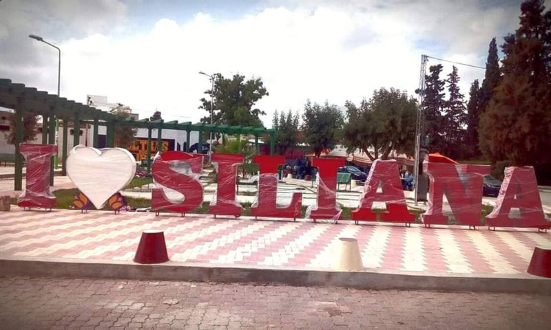

Siliana
Le gouvernorat de Siliana se situe dans la région du haut Tell supérieur du Nord Ouest de la Tunisie et jouit d''''un emplacement géographique spécifique. En effet, limité par 7 gouvernorats (Béja, Jendouba, Le Kef, Sidi Bouzid, Kasserine, Kairouan, Zaghouan), la région est une zone de passage entre le nord ouest et le centre du pays. Le gouvernorat de Siliana est doté de plusieurs atouts naturels qui ont fait de l'agriculture la principale activité économique.
Makhtar
Le circuit des eaux de Siliana
Circuit des célébrationss
Un lieu exceptionnel
Quelques chiffres
Superficie
4 642 Km²
Nombre de maisons
25 000
Habitants
234 100
Localisation
Le gouvernorat de Siliana est entouré par sept autres gouvernorats : le gouvernorat de Béja au nord-est, de Jendouba au nord-ouest, du Kef à l'ouest, de Zaghouan et Kairouan à l'est et de Kasserine et Sidi Bouzid au sud, ce qui lui permet de servir de point de passage entre les régions du nord-ouest, du centre et du sud du pays. Le gouvernorat de Siliana est traversé par deux chaînes montagneuses : le Tell au nord et l'Atlas au sud. Le relief y est donc varié et accidenté. Les formes de transition, collines et plateaux, y occupent une grande place mais elles sont dominées par des massifs montagneux. Les précipitations annuelles sont évaluées à 450 millimètres, 500 millimètres sur les hauteurs et 300 millimètres dans les plaines. Administrativement, le gouvernorat est découpé en onze délégations, dix municipalités, dix conseils ruraux et 86 imadas.

Histoire
Mentionner les villes phares ne dispense pas de citer les destinations de randonnées et de spéléologie que sont Djebel Serj ou Djebel Bargou ou encore les sources d’eau exceptionnelles que sont Ain Soukra ou Ain Boussadia. Faut-il préciser que dans la région règnent plus de 1800 sites historiques allant de la plus lointaine époque préhistorique jusqu’à l’époque islamique. Le territoire reste cependant fortement frappé symboliquement par le fameux site de Zama où une bataille de la 2ème guerre punique, en 202 avant J-C, opposa Hannibal à Massinissa. Cas d’école militaire, cette bataille accéléra la chute de Carthage, 50 ans plus tard.

Culture

hover me
hover me
hover me
hover me